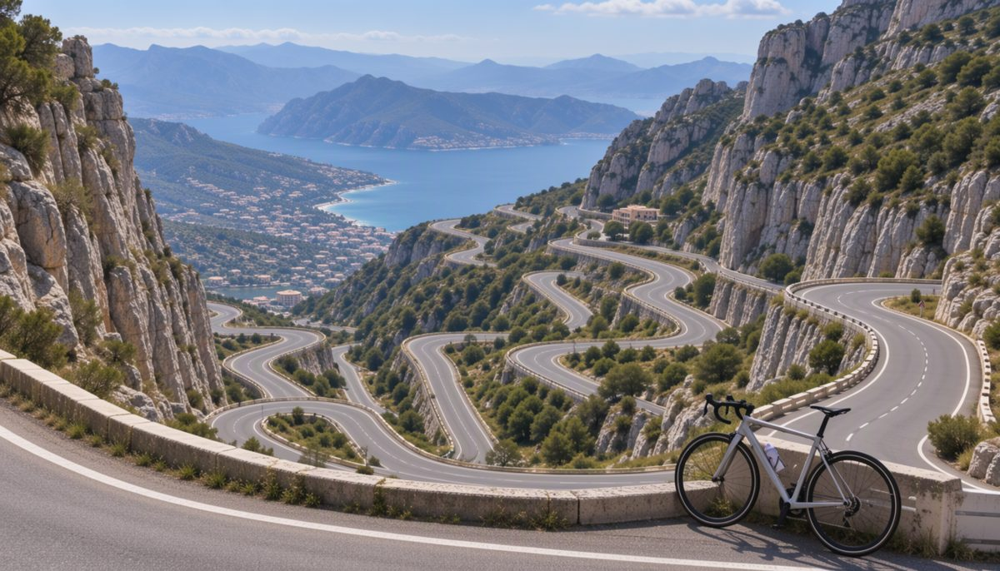
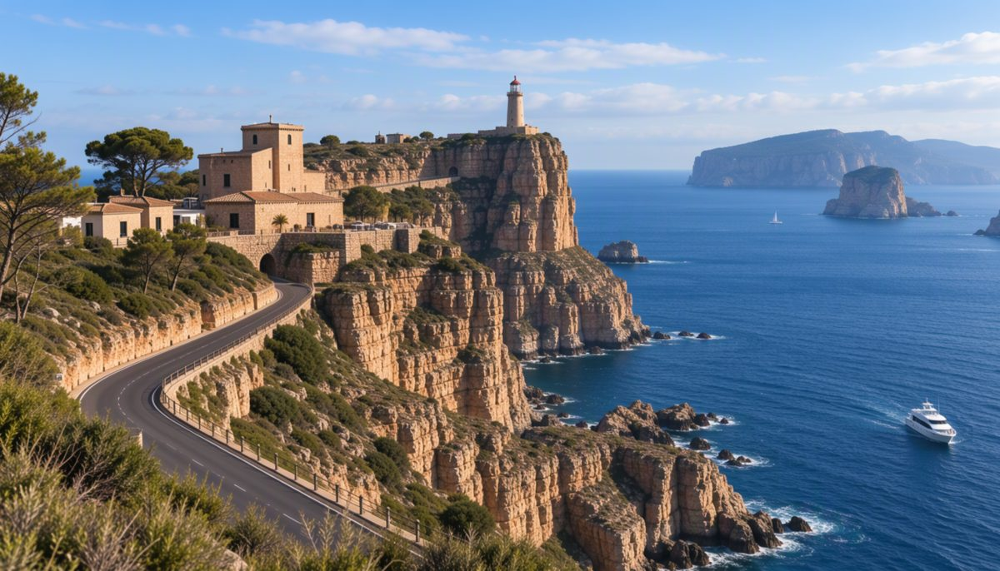

Bicis Tramuntana
Lloga la bici per a qualsevol d'aquestes rutes: 15 € el dia
Rutes en bici per Mallorca

Sa Calobra
· 38 km

Cap de Formentor
· 42 km
Valldemossa
· 30 km
Port de Sóller
· 25 km
Es Trenc
· 28 km
Santuari de Lluc
· 45 km
Pont romà de Pollença
· 20 km
Ses Salines
· 32 km
Els ametllers en flor
· 35 km